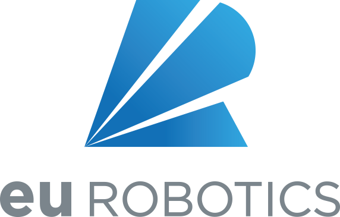

Iniciativa de Diversitat i Inclusió d'euRobotics (euRobotics DII)
Organització: euRobotics AISBL (Associació Europea per a la IA, Dades i Robòtica) · Grup de Treball del Fòrum Europeu de Robòtica (ERF)

Context i Missió: La Iniciativa de Diversitat i Inclusió (DII) d'euRobotics té per objectiu construir una comunitat europea de robòtica més justa, oberta i representativa tant en l'àmbit acadèmic com en l'industrial. A mesura que els sistemes autònoms s'introdueixen a hospitals, fàbriques i llars particulars, garantir que els equips d'enginyeria reflecteixin la pluralitat de la societat és indispensable per evitar biaixos algorítmics, assegurar la seguretat física de tots els perfils d'usuaris i accelerar la confiança social en la tecnologia.
Aportacions Directes d'Arnau:
- Participació al Fòrum Europeu de Robòtica (ERF): Col·laboració activa en l'organització i dinamització de tallers, taules rodones i seminaris de l'ERF per debatre estratègies d'inclusió, retenció de talent i accessibilitat a l'ecosistema robòtic europeu.
- Elaboració de Guies Ètiques: Treball conjunt amb investigadors i representants de la indústria per redactar recomanacions comunitàries que integrin criteris d'ètica, seguretat i equitat en el cicle de vida del desenvolupament robòtic.
- Promoció de Vocacions i Inclusió: Impuls d'iniciatives pont entre centres universitaris, centres tecnològics i empreses per obrir camins professionals a col·lectius tradicionalment infrarepresentats en disciplines STEM.